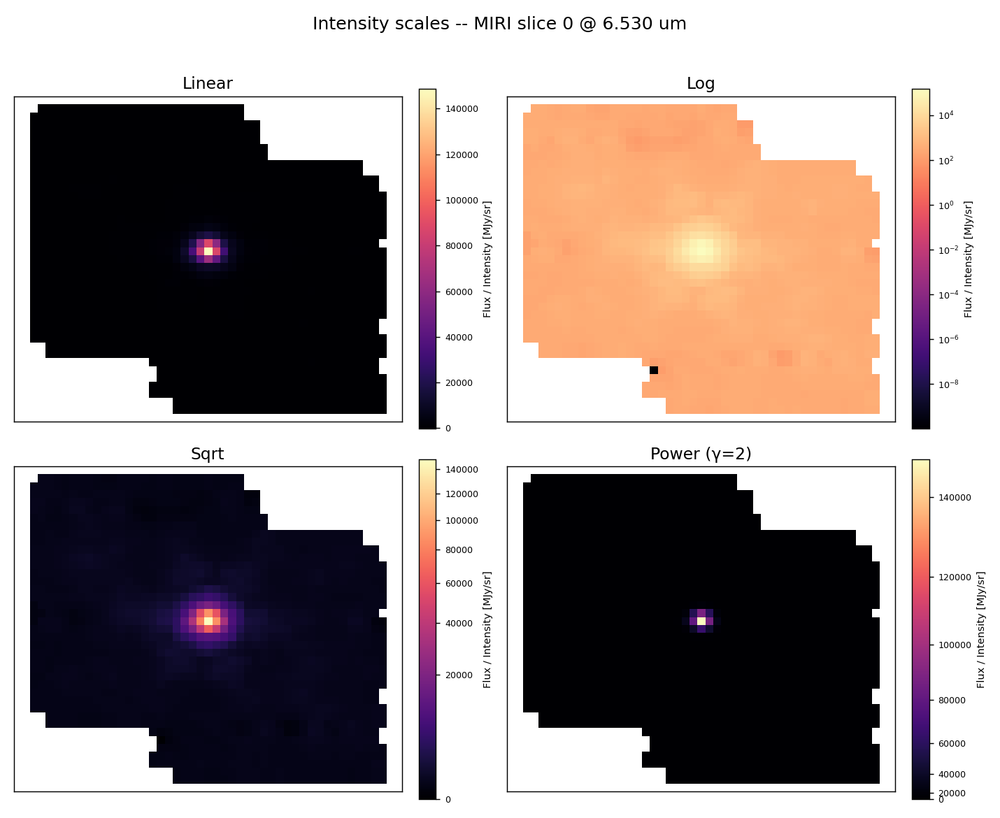
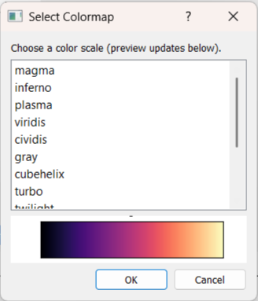

Visualization
IFU Analyzer provides powerful visualization tools to explore and display your data effectively. Learn how to customize the appearance and interact with your data.
Display Options
Intensity Map Display
The main intensity map shows a 2D projection of your 3D data cube:
Each pixel represents a spatial location (spaxel)
Color shows intensity at the current wavelength
Interactive: Click any location to update the spectrum by setting a left or right slice
Spectrum Panel Display
The spectrum panel shows 1D data:
X-axis: Wavelength or frequency
Y-axis: Intensity (flux)
Color Scales
Different scales emphasize different aspects of your data. The same slice rendered with each of them:

Linear Scale (Default)
Direct mapping: intensity → color
Best for: Data without extreme value ranges
Fast computation
Logarithmic Scale
Scale: intensity → log(intensity)
Best for: Wide dynamic range
Emphasizes: Faint features
Square Root Scale
Scale: intensity → √intensity
Best for: Moderate dynamic range
Balanced detail emphasis
Power Law Scale
Scale: intensity → intensity^2
Best for: Custom emphasis
Colormaps
Colormaps control how intensity is mapped to colors on slices. IFU Analyzer includes many options.
Changing Colormaps
Click 🌈 button in slice toolbar
Select colormap from list
Preview updates immediately

Zoom Controls
Zooming In
Select magnifying glass icon under the figure.
Drag from corner to opposite corner.
Click on the Home icon to revert.
Exporting Visualizations
Save Current View as Image
Click on the Save icon under the figure.
Specify filename.
Save.